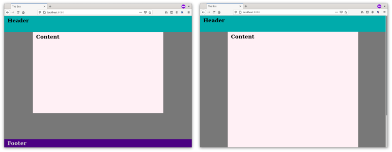

How bad can it be?
I recently dove into PHP and created my first dynamic website. This is dangerous territory for a self-taught newbie. For the first time, I actually had to worry about security.
Fortunately for me, I do not journey alone though the Valley of Newbie. I happen to have a good friend who is not only an excellent person, but also a programmer extraordinaire with years of professional PHP development under his belt. His handle is Bunkerbewohner, and you can check him out via his blog or github. He gave encouragement when I told him my PHP plans, and offered to give feedback if I added him to the repo.
So I made my site, added Bunkerbewohner to the repository, thought 'how bad can it be? Surely I've tested this thing six ways from Sunday', and pushed the code to the server.
I know. Classic newbie.
My friend wrote almost immediately that the redirects didn't work.
Redirects with PHP header()
My files that mixed PHP and HTML generally had the structure:
<!DOCTYPE html>
<html lang="en" dir="ltr">
<head>
...
</head>
<body>
<?php
...
header("Location: otherplace");
?>
...
</body>
</html>
I'm sure any experienced PHP devs reading this immediately see where this is going.
It was already clear that using header to redirect could only work if the HTML header was not already sent, and that there were many things that could trigger this (eg an echo statement, or trailing whitespace after a preceeding PHP script). Unfortunately, I had developed an incorrect mental model regarding when the header is sent because my redirects were working when testing on localhost.
Despite my conviction that the redirects must be fine, I took Bunkerbewohner's suggestion to move the relevant PHP so it came before the HTML head.
<?php
...
header("Location: otherplace");
?>
<!DOCTYPE html>
<html lang="en" dir="ltr">
<head>
...
</head>
<body>
...
</body>
</html>
Problem solved, and 'redirect must come before any HTML output' was clarified. Yet the solution left me with a serious question: why was the behavior different when I tested on localhost?
Testing with header_sent()
Time to investigate. PHP fortunately has a method that checks if or where headers have been sent: the aptly named headers_sent. I made a basic dummy script to check the output of headers_sent, using the optional parameters to get the line at which the headers are sent.
First, I put my dummy script on the remote server and associated it with a domain reserved for a future project:
1 <!DOCTYPE html>
2 <html lang="en" dir="ltr">
3 <head>
4 <meta charset="utf-8">
5 <link rel="stylesheet" href="/testCSS/styles.css">
6 <title>Header Test</title>
7 </head>
8 <body>
9 <?php
10 $isSent = headers_sent($fileVar, $lineVar);
11 ($isSent) ? $isSent = 'True' : $isSent = 'False';
12 ?>
13 <h2><?php echo $isSent.'<br>line:'.$lineVar; ?></h2>
14 <img src="filler.jpg" >
15 </body>
16 </html>
So far so good. This is consistent with the behavior of my site. If headers_sent() is instead called before the DOCTYPE statement, then it returns false. Again, consistent with 'the relevant PHP must come before any HTML for the redirect to work'.
1 <?php
2 $isSent = headers_sent($fileVar, $lineVar);
3 ($isSent) ? $isSent = 'True' : $isSent = 'False';
4 ?>
5 <!DOCTYPE html>
6 <html lang="en" dir="ltr">
7 <head>
8 <meta charset="utf-8">
9 <link rel="stylesheet" href="/testCSS/styles.css">
10 <title>Header Test</title>
11 </head>
12 <body>
13 <h1>Headers sent:</h1>
14 <h2><?php echo $isSent.'<br>line:'.$lineVar; ?></h2>
15 <img src="filler.jpg" >
16 </body>
17 </html>
Next I ran the same dummy script with the PHP built in server running locally. To my confusion, the dummy script always returned false when run on localhost. This was regardless of the presence of echo statements, or whether HTML was output before the script.
1 <!DOCTYPE html>
2 <html lang="en" dir="ltr">
3 <head>
4 <meta charset="utf-8">
5 <link rel="stylesheet" href="/testCSS/styles.css">
6 <title>Header Test</title>
7 </head>
8 <body>
9 <?php
10 echo '<h1>Headers sent:</h1>';
11 $isSent = headers_sent($fileVar, $lineVar);
12 ($isSent) ? $isSent = 'True' : $isSent = 'False';
13 ?>
14 <h2><?php echo $isSent.'<br>line:'.$lineVar; ?></h2>
15 <img src="filler.jpg" >
16 </body>
17 </html>
My first suspicion was that this was either some unexpected behavior of PHP's built in server, or a consequence of hosting and delivering the files on the same machine.
To test if this was due to the PHP built in server, I decided to go full LAMP (Linux, Apache Mysql, PHP) and run my little test on Apache on local. Again, header_sent() reported that the headers were never sent. This wasn't special to the PHP server.
Reading through the comments on the header_sent() manual page brought me to
Yes,
headers_sent() will return false, even if you sent something to the ouptut using print() or header() , if output_buffering is different from Off in you php.ini, and the length of what you sent does not exceed the size of output_buffering.
To test it, try this code with these values in php.ini
1) output_buffering=32
2) output buffering = 4096
Which finally made the lightbulb go off. Output buffering!
Indeed, checking out the default php.ini in /etc showed that it had output buffering set to 4096. The default value is 'off', and that seems to be what the host running the remote server uses. To test, I copied this file into my dummy script folder and set output buffering to zero. You can direct the built-in PHP server to a particular .ini file with the -c flag. Assuming you're already in the project directory:
$ php -S localhost:8080 -c php.ini
Now running the dummy script gives the expected output!
1 <!DOCTYPE html>
2 <html lang="en" dir="ltr">
3 <head>
4 <meta charset="utf-8">
5 <link rel="stylesheet" href="/testCSS/styles.css">
6 <title>Header Test</title>
7 </head>
8 <body>
9 <?php
10 echo '<h1>Headers sent:</h1>';
11 $isSent = headers_sent($fileVar, $lineVar);
12 ($isSent) ? $isSent = 'True' : $isSent = 'False';
13 ?>
14 <h2><?php echo $isSent.'<br>line:'.$lineVar; ?></h2>
15 <img src="filler.jpg" >
16 </body>
17 </html>
Flexbox auto margins
While Bunkerbewohner was looking in my code to find the cause of my redirect woes, he noticed that I was using a javascript function to place the footer for each page. He kindly asked why I was bothering with that instead of simply using auto-margins with flexbox.
Good question.
What was the footer fuss? Basically, if the page content was less than the page height, then I wanted to position the footer at the bottom of the window. Otherwise, the footer should come directly after the content.
My first solution was to use JS to check if the content height was less than the viewport height and, if so, absolutely position the footer at the bottom of the screen. Which is ok, but it was a personal goal to not require JS for the site. Having the footer floating around if JS is disabled, nayah, it's not ideal.
This is where auto-margins with flexbox can come in handy.
Normally auto-margins can be used to center an item horizontally:
body {
background: rgb(120, 120, 120);
}
.red-box {
width: 200px;
height: 200px;
background: darkred;
margin: auto;
}
which isn't terribly useful for placing a footer. If you know the height of the element you want to place, then you could use calc() to place it at the bottom of the window:
body {
background: rgb(120, 120, 120);
}
.red-box {
width: 200px;
height: 200px;
background: darkred;
margin: auto;
margin-top: calc(100vh - 200px);
}
but that's not going to help very much when we don't know in advance if the content above the footer is larger than the screen height.
However, if our parent container is a flex container of defined height, then auto-margins can be used for both horizontal and vertical margins. This is nicely demonstrated by centering an item by simply setting all margins to auto:
body {
background: rgb(120, 120, 120);
min-height: 100vh;
display: flex;
flex-direction: column;
}
.red-box {
width: 200px;
height: 200px;
background: darkred;
margin: auto;
}
Now this is useful for flexible footer placement. As long as the parent container is a flex item with a min-height, giving the footer margin-top: auto; will allocate any free space to the footer's top margin.
An easy solution for a common problem, and also something handy to have in mind when you want to group items without nesting div elements
body {
background: rgb(120, 120, 120);
display: flex;
}
.left-box {
height: 75px;
width: 100px;
background: teal;
border: 2px solid blue;
margin-left: 10px;
}
.right-box {
height: 75px;
width: 100px;
background: darkgreen;
border: 2px solid green;
margin-left: auto;
}
So the header situation was clarified and unnecessary JS was replaced by pure CSS. The only remaining surprise for bringing the site online was...
403 Forbidden
This caught me off guard. 403-Forbidden is an 'access denied' error. The site creates a folder for each user. I set the access rights for the folders to 766 (rwxrw-rw) under the assumption that, well, those were reasonable access rights.
Apparently the executable right is needed to be able to change into the folder, so the grand solution to this problem was to change from 766 to 755 (rwxr-xr-x). Nothing massive, but still another point where the shift from local development to 'production' tripped me up.
Parting Thoughts...
I would love to wrap up with 'and thus concludes the story of my first PHP deployment...' but that wouldn't be accurate. I'm sure there will plenty of changes in the future as I get feedback and continue learning. Can't really conclude a never-ending story.
Instead, I can only summarize 'lessons learned so far'. Like how important it is to make sure that your development environment really mimics the 'production' environment. And how valuable a second set of eyes and feedback from more experienced coders are. Also, that it's important to have at least an idea of what settings can be changed, and how to change them.
If you want to see my new site: check out stuff-exchange.de